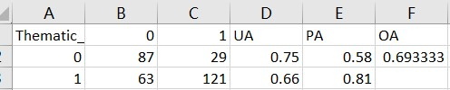
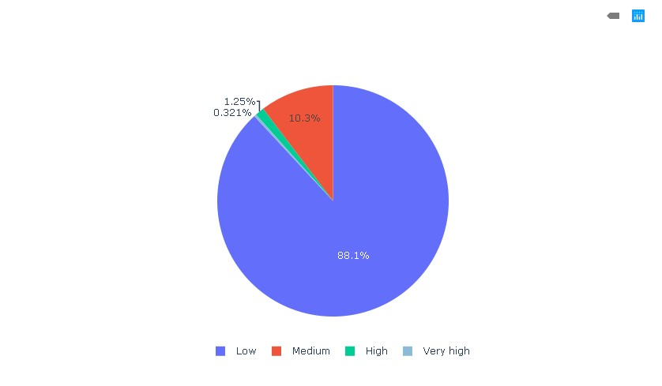
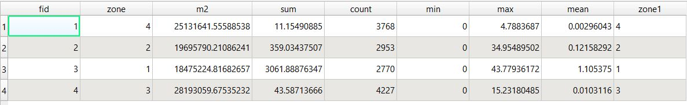

Accuracy metrics, exposure statistics, and interpretation of the susceptibility model for the Valtellina catchment.

The classification model trained in R was fed 1,000 sample points — 700 for training and 300 for testing. The overall accuracy is 0.69, which we consider reliable for a first-pass susceptibility map.
The error matrix compares predicted vs. actual classes (landslide / non-landslide) and reveals the trade-off between omission and commission errors in the test set.
Overlaying the reclassified susceptibility map with WorldPop reveals that although most inhabitants live in low-risk terrain, more than 10 % of the population sits in medium-to-very-high susceptibility classes.
This highlights the relevance of landslide prevention and land-use planning in the Valtellina valley — a call to action for civil-protection planning at the municipal level.

Raw statistics from the zonal analysis — actual people living in each susceptibility class.

The workflow can be applied to other alpine catchments worldwide, reducing losses from landslides through early-warning and planning.
Increasing the number of sampling points is expected to improve model accuracy and sharpen identification of high-risk zones.
Future iterations can integrate building footprints, road exposure, and critical infrastructure for a full quantitative risk model.
Zoom, toggle terrain layers, and inspect susceptibility values by clicking anywhere.
Open WebGIS →